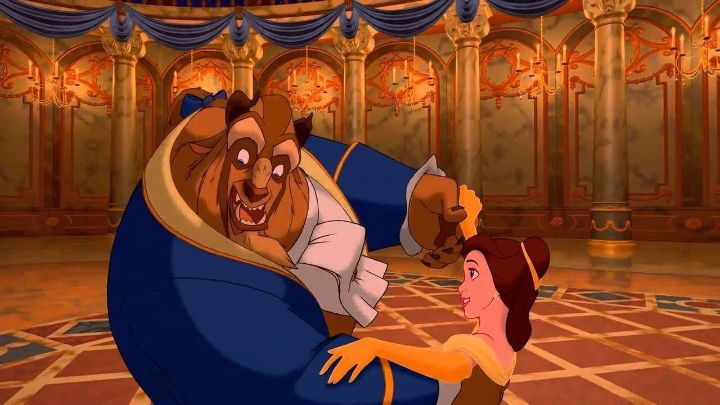

One's lucky, two's a trend. If "The Little Mermaid" was the possible start of the modern Disney renaissance, it was "Beauty and the Beast" that solidified it. The "tale as old as time" was, and remains, one of the most lavish of the traditonal fairy tales in Disney's catalog. And unlike "Mermaid" and some of Disney's other films, "Beauty and the Beast" feels suited to cross the divide between genders, an engaging tale for both boy and girls thanks to a fairly even representation between both the Prince and Princess, and some horror and lore aspects in addition to the core romance. As a kid, there was always something a little different about "Beauty and the Beast," and it's easier to label as an adult rewatching it. This is stylized as a much more gothic horror fantasy relative to prior Disney stories. That fits well for this classic tale. As explained by a narrated introduction (no song, just a grim voice and ominous stained-glass windows depicting the scenes, which scared be a little as a kid), there was a spoiled Prince that didn't show kindness to an enchantress, and as punishment to his poor nature, she curses him and his castle. He is transformed into a hairy, horned beast (like a massive, horrifying werewolf), and his castle staff are turned into talking objects (a candle holder, a clock, a teapot, etc.). They are doomed to stay this way unless the Beast can learn to truly love someone, and if that person can learn to love him back. The enchantress' magic rose is a symbol of the curse and its timeline: if it wilts before the curse is broken, it becomes permanent for eternity. Being in the middle of an old forest, there are no visitors for years, and the castle falls into decay.Enter Belle, a beautiful young woman in a nearby provincial French town. Unlike the other girls, she's more interested in reading books and fantasies than cooking, cleaning, or meeting nice men her age. Living alone with her father, an eccentric inventor everyone assumes is crazy, doesn't help her reputation, in an old town with old values, like assuming all women should get married and not bother with an education. When her father gets lost in the woods and accidently comes across the Beast's castle, he's taken prisoner there as a trespasser, and Belle agrees to take his place as the castle's captive for his safe return. The Beast and his staff are aware that Belle is the first human, and a girl to boot, to have come to the castle, and might be just the person to break the spell, IF she can naturally grow to love him. But that isn't likely, not just because of the Beast's appearance, but for his nasty personality and temper. Meanwhile, the town's hero Gaston has been trying to woo Belle, and hatches his own plans to ensure that he marries the most beautiful girl in the land (as he sees it, he deserves nothing less, no matter who the most beautiful girl happens to be). One thing to note is that this movie might have one of the most predujiced and sexist settings against women Disney's ever had. This has been a real issue historically, but the 80's and 90's seemed to delight in talking down to girls to tell them that they were in an unfair society, even if it was exagerrated beyond modern reality. In a way, this makes Belle one of the more likable Disney princesses, as she's one of the few not remotely interested in romance, and doesn't hesitate to say "no" when it's proposed. And it's just her luck that the two interested in her affection, Gaston and the Beast, are some of the nastiest men one could find. At least at first. It takes Beast a long while to learn, but after slowly opening the castle to Belle and spending time with her, he becomes more considerate, and the two grow to love each other in time. By comparison, Gaston turns out to be the real beast (hey, that's the morale!).  One surprise upon rewatching was how much of a role Belle's father plays. He's the reason Belle is kept prisoner in Beast's castle. The town genuinely thinks he's crazy, and even more so when he comes back raving about a 10-foot tall Beast Prince. Part of Gaston's plans is to secretly work with the director of the local madhouse, to threaten to lock up Belle's father there, unless she agrees to marry him (and after being proven that the Beast is real after all, goes off to slay it). Both Belle's father and Gaston turn out to be key characters to greating a threat and climax in the story.And while it seems a little cliche now, it's a really good story. Belle's a strong character, and both her and the Beast grow while living together. Their romance feels a little rushed, but the movie skips through what appears to be a few weeks or months, and the time makes it more believable. And the resolution, while again, predictable today, feels classic and the best way it could have been done. There isn't as much comedy as prior Disney movies either, so this film comes across as the most classical and serious form of a Princess fairy tale that we've yet gotten, elevating the impression. And from a production perspective, "Beauty and the Beast" really does look lavish. It's a step up from "The Little Mermaid" and "Rescuers Down Under" before it, and was in that sweet spot between transitions where CGI was used for some elements, but 2D art was widely used for characters and most backgrounds, showcasing the classical 2D at it's best. The mixture of both allows for large dance numbers ("Be Our Guest") and the iconic ballroom dance, which was probably the most complicated scene to animate at the time. Some of that gothic style for Beast's castle and stained glass windows help make the movie feel different, and there's something unusual about the townspeople of Belle's home (look closely, and you'll see a few characters that might have inspired Sylvain Chomet's wild designs decades later). The designs for the talking furniture throughout the castle is especially inspired, giving us some of Disney's most memorable characters, and as a kid, I'd be giddy to see hints of them in the background long before their mouths move. The songs are a good pair with "The Little Mermaid," and the acting (and singing performances) for everyone is as strong as we've ever seen."Beauty and the Beast" might be Disney's most celebrated animated film, having seen multiple re-releases (IMAX extended cut, 3D, 4K, a live-action remake) and frequent references. It's especially remarkable after reading about the struggle to adapt the story, and the ultimately rushed production schedule. I think it's success is due to it being the right balance of serious and fun, of Disney's classic tropes like Princesses and dancng household objects, and of a fairy tale told in a timeless fashion. We'd not get a movie with this culmination from Disney ever again.
- "Ani" More reviews can be found at : https://2danicritic.github.io/ Previous review: review_Beautiful_Bones_-_Sakurako's_Investigation Next review: review_Belladonna_of_Sadness